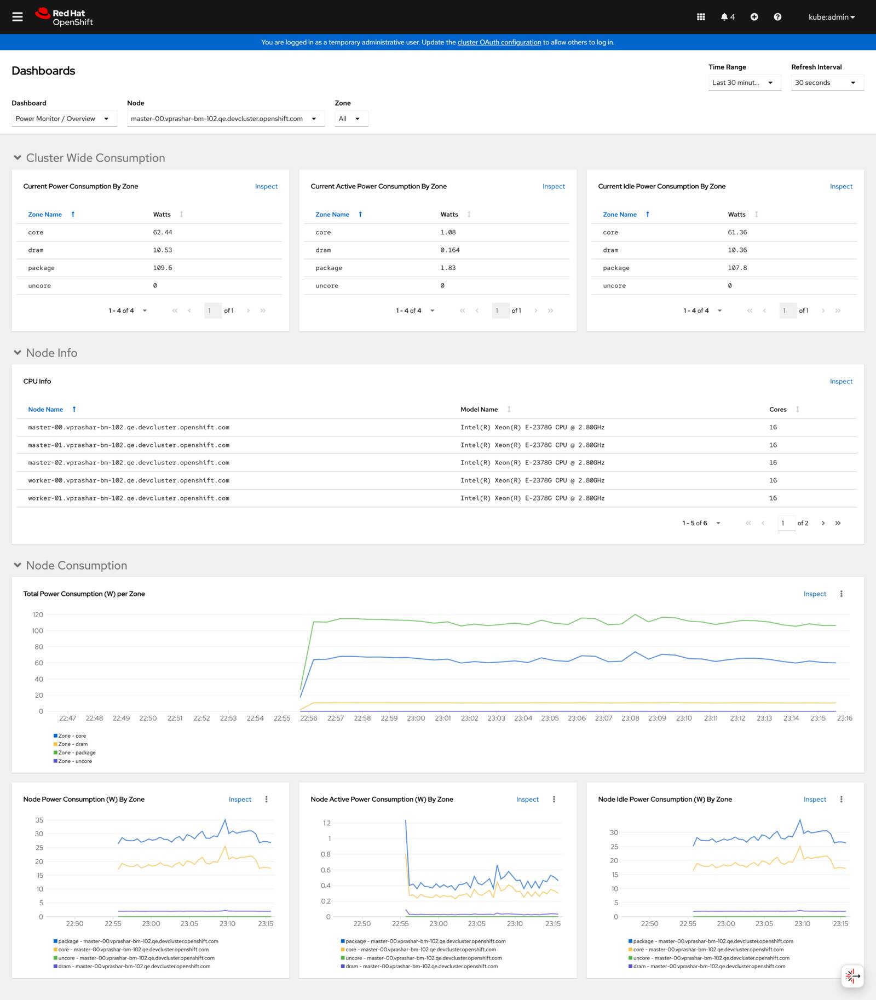

Monitoring & Troubleshooting
This guide covers setting up monitoring for your Kepler deployment and resolving common issues. It includes OpenShift-specific monitoring configuration, Grafana integration, and systematic troubleshooting approaches.
Monitoring Setup
Enable User Workload Monitoring
Ensure User Workload Monitoring is enabled in your OpenShift cluster:
# Check current configuration
oc -n openshift-monitoring get configmap cluster-monitoring-config -o yaml
If User Workload Monitoring is not enabled, create or update the configuration:
apiVersion: v1
kind: ConfigMap
metadata:
name: cluster-monitoring-config
namespace: openshift-monitoring
data:
config.yaml: |
enableUserWorkload: true
Apply the configuration:
oc apply -f cluster-monitoring-config.yaml
Verify ServiceMonitor Creation
The Kepler Operator automatically creates ServiceMonitor resources for Prometheus integration:
# Check ServiceMonitor
oc get servicemonitor -n power-monitor
# View ServiceMonitor configuration
oc get servicemonitor -n power-monitor -o yaml
Expected output:
NAME AGE
kepler-exporter 5m
Access OpenShift Metrics
Navigate to Observe → Metrics in the OpenShift console to view power consumption metrics:
 OpenShift metrics dashboard showing power consumption overview
Key Metrics to Monitor
Query these metrics in the OpenShift console:
# Node power consumption
kepler_node_power_total
# Pod power consumption
kepler_pod_power_total
# Container energy consumption
kepler_container_energy_total
# Process power consumption
kepler_process_power_total
Test Metrics Endpoint
Verify that metrics are being exported correctly:
# Port forward to metrics endpoint
oc port-forward -n power-monitor svc/kepler-exporter 9102:9102
# Test metrics endpoint (in another terminal)
curl http://localhost:9102/metrics | grep kepler_node_power_total
# Check metrics availability
curl -s http://localhost:9102/metrics | grep -c "kepler_"
Expected: Should return multiple metrics starting with kepler_.
Grafana Integration
Import Kepler Dashboard
For advanced visualization, import the official Kepler Grafana dashboard:
# Download the dashboard JSON
curl -O https://raw.githubusercontent.com/sustainable-computing-io/kepler-operator/v1alpha1/hack/dashboard/assets/kepler/dashboard.json
Then import into your Grafana instance:
- Open Grafana
- Go to Dashboards → Import
- Upload the
dashboard.jsonfile - Configure data source (Prometheus)
Custom Grafana Queries
Useful PromQL queries for Grafana dashboards:
# Total cluster power consumption
sum(kepler_node_power_total)
# Power consumption by node
kepler_node_power_total
# Top 10 power-consuming pods
topk(10, kepler_pod_power_total)
# Power consumption rate (watts)
rate(kepler_node_energy_total[5m])
# CPU vs Power correlation
kepler_node_power_total / on(instance) kepler_node_cpu_usage_percentage * 100
Troubleshooting
Common Issues and Solutions
Issue: PowerMonitor Not Creating DaemonSet
Symptoms:
- PowerMonitor exists but no DaemonSet is created
- Status shows conditions with errors
Diagnosis:
# Check PowerMonitor status and conditions
oc describe powermonitor power-monitor
# Check operator logs
oc logs -n openshift-operators deployment/kepler-operator-controller-manager
Solutions:
- Check RBAC permissions:
# Verify operator service account permissions
oc auth can-i create daemonsets --as=system:serviceaccount:openshift-operators:kepler-operator-controller-manager
# If permissions are missing, check ClusterRole
oc describe clusterrole kepler-operator-manager-role
- Verify resource quotas:
# Check namespace resource quotas
oc describe resourcequota -n power-monitor
# Check if quotas are blocking creation
oc get events -n power-monitor | grep -i quota
Issue: Pods Not Scheduling on Nodes
Symptoms:
- DaemonSet created but pods remain in Pending state
- Pods show FailedScheduling events
Diagnosis:
# Check pod status and events
oc get pods -n power-monitor
oc describe pods -n power-monitor
# Check node labels and taints
oc get nodes --show-labels
oc describe nodes | grep -i taint
Solutions:
- Update node selector:
# Check available node labels
oc get nodes --show-labels | grep kubernetes.io/os
# Update PowerMonitor nodeSelector
oc patch powermonitor power-monitor --type='merge' -p='
{
"spec": {
"kepler": {
"deployment": {
"nodeSelector": {
"kubernetes.io/os": "linux"
}
}
}
}
}'
- Add tolerations for tainted nodes:
# Add toleration for master nodes
oc patch powermonitor power-monitor --type='merge' -p='
{
"spec": {
"kepler": {
"deployment": {
"tolerations": [
{
"key": "node-role.kubernetes.io/master",
"operator": "Exists",
"effect": "NoSchedule"
}
]
}
}
}
}'
Issue: Missing Metrics in Monitoring
Symptoms:
- Pods are running but metrics don't appear in OpenShift console
- ServiceMonitor exists but no data in Prometheus
Diagnosis:
# Check ServiceMonitor configuration
oc get servicemonitor -n power-monitor -o yaml
# Check service endpoints
oc get endpoints -n power-monitor
# Test metrics endpoint directly
oc port-forward -n power-monitor svc/kepler-exporter 9102:9102
curl http://localhost:9102/metrics | head -20
Solutions:
- Verify User Workload Monitoring:
# Check if User Workload Monitoring is enabled
oc -n openshift-monitoring get configmap cluster-monitoring-config -o yaml
# Check user workload monitoring pods
oc get pods -n openshift-user-workload-monitoring
- Check ServiceMonitor labels:
# Ensure ServiceMonitor has correct labels for discovery
oc patch servicemonitor kepler-exporter -n power-monitor --type='merge' -p='
{
"metadata": {
"labels": {
"app.kubernetes.io/name": "kepler-exporter"
}
}
}'
Issue: High Resource Usage
Symptoms:
- Kepler pods consuming excessive CPU or memory
- Cluster performance degradation
Diagnosis:
# Check resource usage
oc top pods -n power-monitor
# Check current configuration
oc get powermonitor power-monitor -o yaml | grep -A 10 config
Solutions:
- Reduce metric granularity:
# Reduce to node and pod metrics only
oc patch powermonitor power-monitor --type='merge' -p='
{
"spec": {
"kepler": {
"config": {
"metricLevels": ["node", "pod"],
"sampleRate": "10s"
}
}
}
}'
- Limit terminated workload tracking:
# Reduce terminated workload tracking
oc patch powermonitor power-monitor --type='merge' -p='
{
"spec": {
"kepler": {
"config": {
"maxTerminated": 100
}
}
}
}'
Advanced Debugging
Enable Debug Logging
For detailed troubleshooting, enable debug logging:
# Enable debug logging
oc patch powermonitor power-monitor --type='merge' -p='
{
"spec": {
"kepler": {
"config": {
"logLevel": "debug"
}
}
}
}'
# View debug logs
oc logs -n power-monitor -l app.kubernetes.io/name=kepler-exporter -f
Remember to disable debug logging in production:
oc patch powermonitor power-monitor --type='merge' -p='
{
"spec": {
"kepler": {
"config": {
"logLevel": "info"
}
}
}
}'
Collect Diagnostic Information
Create a diagnostic script for support:
#!/bin/bash
# kepler-diagnostics.sh
echo "=== Kepler Diagnostics ==="
echo "Date: $(date)"
echo "Cluster: $(oc cluster-info | head -1)"
echo
echo "=== PowerMonitor Status ==="
oc get powermonitor power-monitor -o wide
echo
echo "=== PowerMonitor Conditions ==="
oc describe powermonitor power-monitor | grep -A 20 "Conditions:"
echo
echo "=== DaemonSet Status ==="
oc get daemonset -n power-monitor
echo
echo "=== Pod Status ==="
oc get pods -n power-monitor -o wide
echo
echo "=== Recent Events ==="
oc get events -n power-monitor --sort-by='.lastTimestamp' | tail -10
echo
echo "=== ServiceMonitor ==="
oc get servicemonitor -n power-monitor
echo
echo "=== Operator Logs (last 50 lines) ==="
oc logs -n openshift-operators deployment/kepler-operator-controller-manager --tail=50
Run with:
chmod +x kepler-diagnostics.sh
./kepler-diagnostics.sh > kepler-diagnostics-$(date +%Y%m%d-%H%M%S).log
Performance Tuning
Recommended Production Settings
For production environments with performance considerations:
spec:
kepler:
config:
logLevel: warn
metricLevels: [node, pod] # Avoid process/container levels
sampleRate: 10s # Reduce sampling frequency
maxTerminated: 500 # Limit memory usage
deployment:
nodeSelector:
node-role.kubernetes.io/worker: "" # Avoid master nodes
Resource Limits
Set resource limits for Kepler pods:
spec:
kepler:
deployment:
resources:
limits:
cpu: 200m
memory: 256Mi
requests:
cpu: 100m
memory: 128Mi
Getting Help
If you continue to experience issues:
- Check the logs with the diagnostic script above
- Search existing issues in the Kepler Operator repository
- Open a new issue with diagnostic information
- Join the community - See Support for community channels